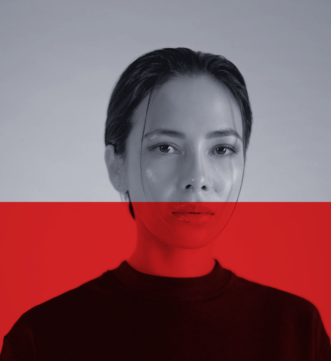
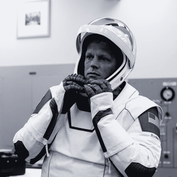
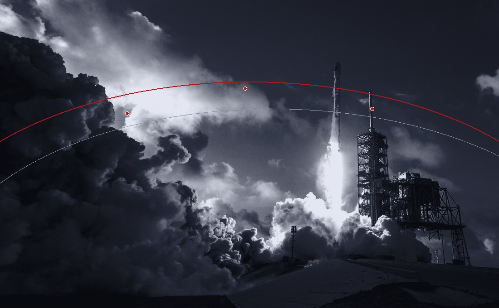
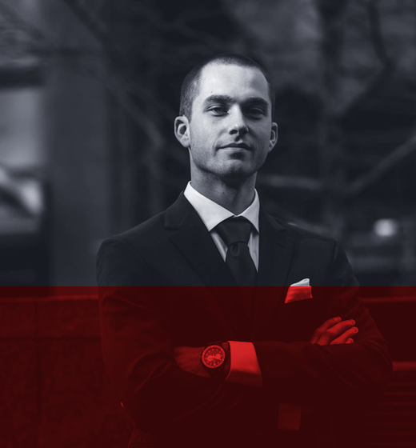
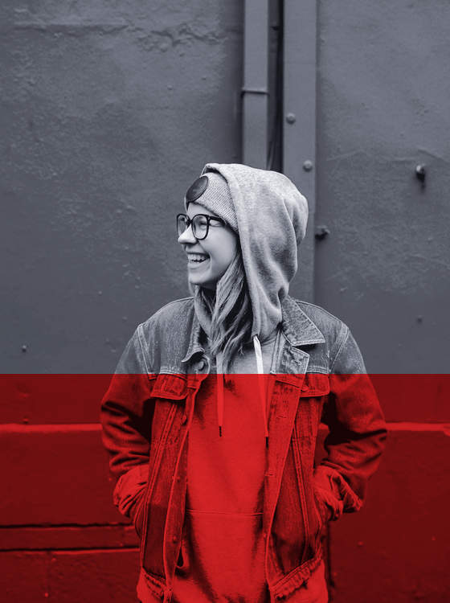
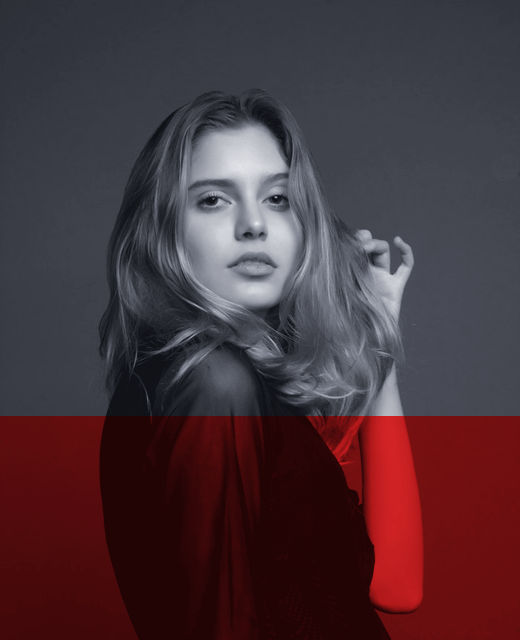
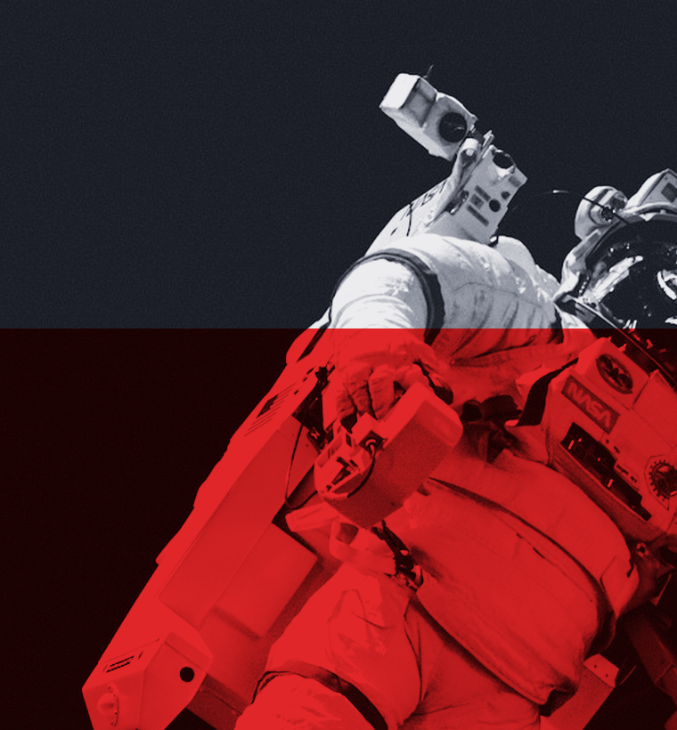

Elena Rostova +380% ROAS
"My firm, Lumina Aesthetics, needed high-velocity TikTok and Meta customer acquisition. Astropulse engineered our viral UGC creative pipeline and scaled monthly recurring revenue from $45k to $210k in 90 days."

Targeted traffic.
Real brand
velocity.
We're not here for vanity views — we're here for orbital scale. With SpaceX-grade data telemetry, rapid UGC hook testing, and relentless algorithmic optimization, we turn paid social spend into compounding profit.
Contact UsWe map your ideal buyer's digital orbit across TikTok, Instagram, and YouTube — decoding behavioral triggers, subculture trends, and competitor ad spend before ignition.
Using precision media buying architectures on Meta Advantage+, TikTok Spark Ads, and YouTube Shorts, we deploy capital only where high-intent conversion velocity is proven.
Attention is oxygen. Our creative propulsion studio produces high-converting UGC, 3D motion assets, and landing funnels engineered to slash CAC and multiply click-to-purchase rates.
Zero blind spots. We deploy server-side Conversion APIs (CAPI), multi-touch attribution, and live mission dashboards so every dollar of ad spend is tracked to net revenue.
Inspired by aerospace flight computers, our proprietary media-buying engine monitors 40+ real-time auction signals per second — automatically reallocating budget toward winning creative payloads while terminating underperforming ad sets in milliseconds.
REQUEST TELEMETRY BRIEFING ↗

"My firm, Lumina Aesthetics, needed high-velocity TikTok and Meta customer acquisition. Astropulse engineered our viral UGC creative pipeline and scaled monthly recurring revenue from $45k to $210k in 90 days."
"At Hyperion Wearables, we struggled with ad fatigue. Astropulse deployed an algorithmic Shorts & Reels matrix that generated 42M organic-assisted impressions and cut our CPA by 44%."
"We came to Astropulse for paid social media buying across 8 European markets, and what we got was a full orbital telemetry system — transparent attribution and relentless profit scaling."
Targeted traffic.
Consistent global
reach.
Localized ad operations and native creator networks active across North America, Europe, MENA, and APAC.
Audited partner retention rate over 12 consecutive billing cycles.



Ready to launch your brand into high-converting social orbit? Transmit your coordinates below and our mission directors will respond within 24 hours.

During the initial 14-day Sprint 0, we audit your pixel telemetry, install server-side CAPI, and launch our first wave of high-velocity creative hooks. Most brands see measurable CPA drops and RoAS lift within 14–21 days, with aggressive budget scaling in months 2–4.
Both. We combine high-frequency organic short-form video testing (TikTok, Reels, Shorts) with surgical paid media buying (Spark Ads, Meta Advantage+), turning proven organic winners into scalable paid ad payloads.
Yes. Every client receives a custom server-side tracking architecture and a 24/7 live telemetry dashboard displaying net RoAS, MER (Marketing Efficiency Ratio), hook hold-rates, and cohort LTV.
We specialize in high-growth DTC eCommerce, consumer tech hardware, SaaS apps, and digital consumer brands investing between $15,000 and $250,000+ per month in paid social acquisition.